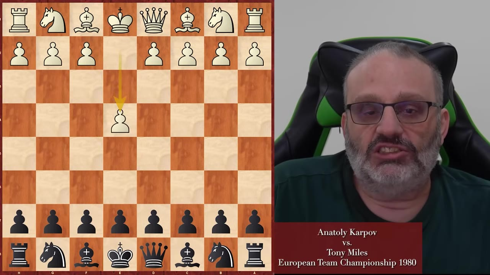
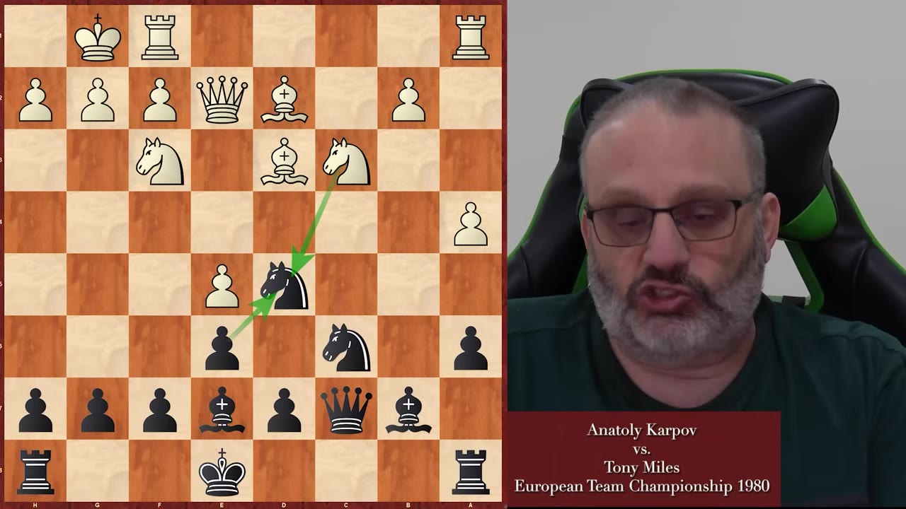
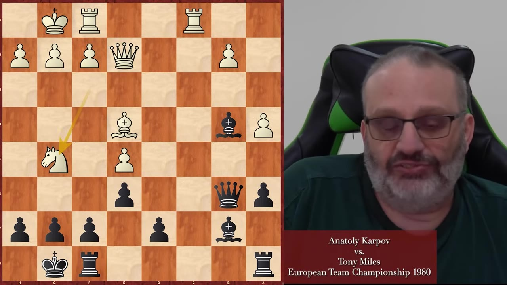
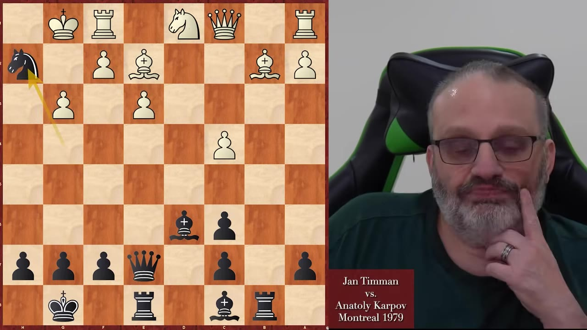
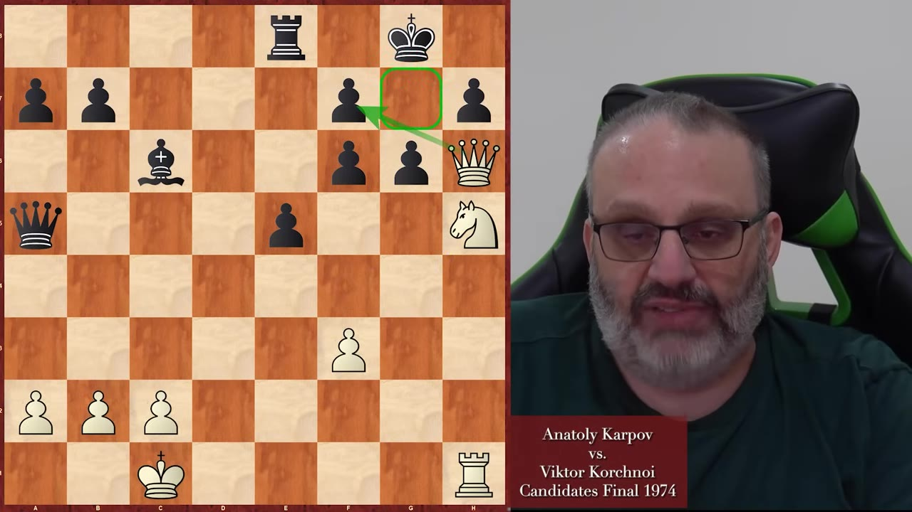
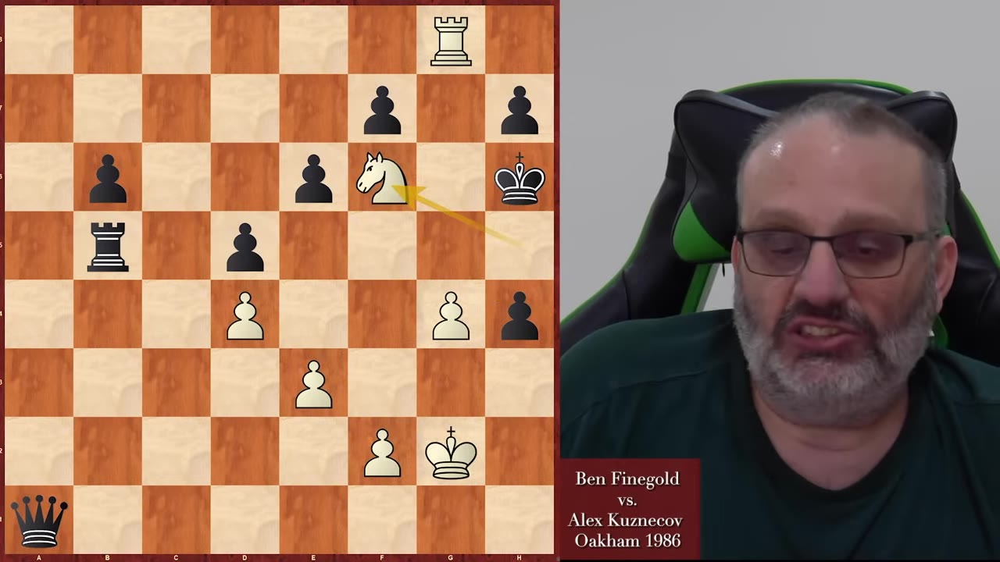

A weekly lecture on the one thing engines can't teach you — playing the move that wins, not the move that's best. Four Karpov games, two of Finegold's own, and one principle he heard from Tony Miles 45 years ago and never forgot.
Watch on YouTubeThis is the weekly lecture, and the topic is a little different than usual: practical chess advice for intermediate players. Finegold's pitch is that most improving players study the wrong way — 90% of their time spent running games through an engine, nodding along while it says "the engine doesn't like that." That doesn't make you better. It makes you try to play like an engine, which is impossible.
The frame for the lecture: three Karpov games and three of his own, chosen because Karpov is, in Finegold's ranking, about the fifth-best player who ever lived — and a great practical player, not just a great calculator. First up, Karpov–Miles, European Team Championship 1980.

Miles doesn't play engine-approved openings — nobody in 1980 did — and other grandmasters scoffed at how he handled the opening. That's the point: chess is a practical game. Miles likes weird positions; Karpov likes stable, boring positions where he's simply better. So Miles builds a strange structure and dares Karpov to prove an edge.
Finegold uses the middlegame to hand out the nuggets he keeps promising: when the opponent has a pawn on b5, play a4. Grandmasters (and engines) like the two bishops, because a bishop covers a lot of ground fast; lower-rated players cling to knights for the occasional fork. And every move, do the small thing — Rc1 to grab the open file, Rb8 to swing a dead rook onto an active one.

The rook on a8 isn't very good. The rook on b8 is fantastic. It's controlling a whole file and it's attacking something.— GM Ben Finegold
This game is the whole reason for showing the Miles game, and it's a story Finegold has carried for 45 years. A position arose where Karpov could have played the Greek-gift sacrifice, Bxh7+ — a line a generation of grandmasters had analyzed by hand (no engines yet) and concluded was very strong. Karpov instead played Ng5. Afterward someone asked Miles whether the bishop sac was good.

It doesn't matter if the sacrifice is good. I knew Karpov wouldn't play it.— Tony Miles, on whether Bxh7+ was sound
That, Finegold argues, is the best practical answer he's ever heard — 100% practical, 0% engine-like. Miles didn't burn fifteen minutes calculating a speculative sac, because Karpov doesn't make speculative sacs. And the postscript matters: Karpov didn't lose because he declined the sacrifice. He lost because he later blundered a pawn — Miles traded rooks first, then took the poisoned b-pawn, and from there it was two bishops and an extra pawn into a lost ending Karpov couldn't hold.
Now the counter-argument. Finegold was at Montreal '79 — nine years old, driven up from Detroit, watching a field that included Karpov, Tal, Spassky, Larsen, Timman. (He also met Edward Lasker there, a man who won famous games in the 1910s.) This is one of his favorite games from the tournament, and it refutes the idea that Karpov never speculates.
Karpov, Black, gets a big pawn center against passive white pieces, swings the rook to b8, and then plays Nxh2 — a sacrifice. The difference from the Miles game is that Karpov saw all the way through it. Timman tried the in-between c5 to dodge the king-takes-knight / Qh4+ line, but Karpov had already seen Nxg3 — the move Timman admitted he missed — and the attack rolled on. Black sacked material, drove White's king up the board, and mated.

The clincher. A Sicilian Dragon, Yugoslav Attack — the match Karpov won by a point to become world champion by default when Fischer wouldn't play. You'd expect positional, strategical Karpov. Instead he castles opposite, sacrifices the h- and g-pawns, and plays for mate, out-calculating Korchnoi the whole way. "What was Tony Miles talking about?"
The instructive bit is the one moment it could have gone wrong. After exf6, Karpov wanted Nh5 leading to unstoppable mate — except Black had Re1+ and would mate first, because of Black's own ...exf6. Karpov saw it, didn't hang mate, and won with Qxh7+ and Qh8+ instead.

When you're thinking, you have to think about the whole chessboard. You can't think about what you're doing and forget what your opponent's doing.— GM Ben Finegold
One of his own to close — a junior tournament in England, the one where he met Anand. Black (Finegold's opponent, Alex Kuznecov) was completely winning: up two pawns for nothing. The practical move was Be7, calmly stop White's attack, queen the passed pawns later. Instead Kuznecov calculated, decided the attack didn't work, and pushed the pawns — a3, a2, promoting with check.
He was wrong. After the queen check, White had exactly one winning move at each step — h4, then Nf6, then king to h2 — and the cornered king escaped a stalemate that never existed because a pawn could always move. Finegold won a game he should have lost, because his opponent wasn't practical.
